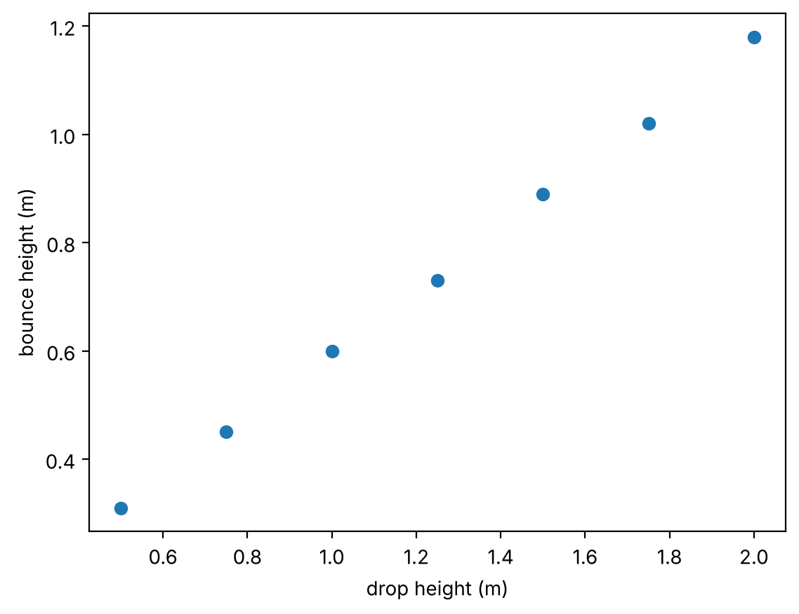
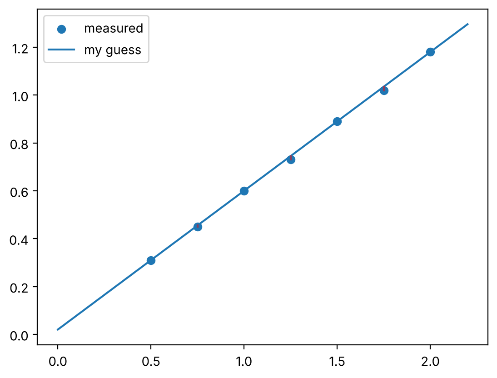

A short introduction. Each section below has its own video: the idea first, then the matching notebook steps. Captions are built in.
By the end of today you can:
- collect data with a fair test and say where the errors come from
- describe a model as a guess with adjustable numbers
- work out the mean squared error of a model by hand and in code
Plan the Drop
You'll drop a ball from at least seven heights between 0.5 m and 2 m and measure how high it bounces.
- The drop height goes in.
- The bounce height is what the model will learn to predict.
Plan
In your group, decide:
- What must stay the same for every drop?
- A bounce only lasts a moment. How will you read its highest point?
- How many times will you drop from each height, and what will you do with the results?
Suggestions
- The same ball, the same floor, let go (not thrown), and always measure to the bottom of the ball.
- Fix a tape measure upright against a wall. One person drops, one watches at eye level beside the tape and calls out the height at the top of the bounce. Watching from above or below makes the reading wrong.
- Drop three times from each height and take the mean. If one result is far from the other two, drop again.
Collect
Record your results in a table like this.
| Drop height (m) | Bounce 1 (m) | Bounce 2 (m) | Bounce 3 (m) | Mean bounce (m) |
|---|---|---|---|---|
| 0.50 | ||||
| 0.75 | ||||
| 1.00 | ||||
| ... |
If you finish early, try a different ball or a different floor and compare.
Look at Your Data
In your notebook
Open session4-starter.ipynb. Type your drop heights and mean bounces into the first cell, then run the first two cells to plot them. If your class couldn't go outside, the backup data is already there: a tennis ball dropped onto concrete.

A Model Is a Guess With Knobs
The dots fall roughly on a straight line, so our model is a line:
predicted bounce = w × drop height + b
w and b are the model's weights: the numbers it can adjust.
wsets how steep the line is.bsets where the line starts when the drop height is 0.
Think of them as two knobs. Turn them and the line moves. Training means finding the knob settings that make the line fit the dots best. The Mood Machine is exactly the same idea, with 820,874 knobs instead of 2.
When a model predicts a number like this, it's called regression.
Scoring a Guess: The Loss
To get better, a model needs one number that says how wrong it is. That number is the loss. We use the mean squared error:
- For each dot, find the error: prediction minus measurement.
- Square each error, so it's always positive. Otherwise errors above and below the line would cancel out, and a bad line could look perfect. Squaring also makes big errors count far more: twice as far out gives four times the loss.
- Take the mean of the squared errors.
Worked example with w = 0.5 and b = 0, for the first three backup points:
| Drop | Prediction | Measured | Error | Squared |
|---|---|---|---|---|
| 0.50 | 0.25 | 0.31 | −0.06 | 0.0036 |
| 0.75 | 0.375 | 0.45 | −0.075 | 0.0056 |
| 1.00 | 0.50 | 0.60 | −0.10 | 0.0100 |
The mean over all seven points is about 0.0148. A loss of 0 would mean the line passes through every dot. Training has one goal: make the loss as small as possible.
In your notebook
Run sections 1 and 2. In the YOUR TURN cell, try at least four guesses for w and b. Which gives the smallest loss? The last cell draws your best guess with its errors as red lines.

Exit Check
Think
Guessing w and b by hand is slow. How could the computer decide which way to turn each knob? Next session answers this.